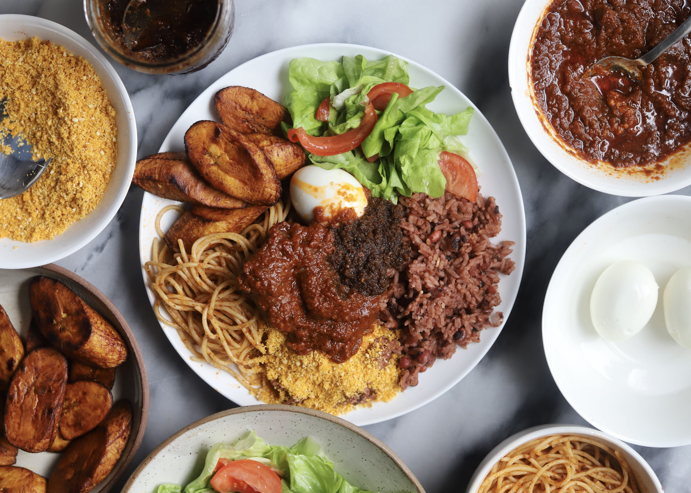

Back
Wakye Recipe

About the Ghanaian Wakye
Wakye is a Ghanaian dish of cooked rice and beans. It is a popular dish in Ghana and is enjoyed by many people.
Wakye is usually served with a spicy pepper sauce and fried plantains. It is a delicious and filling meal that is perfect for lunch or dinner.
Ingredients
- 2 cups of rice
- 1 cup of black-eyed peas
- 1 onion, chopped
- 1 teaspoon of salt
- 1 teaspoon of pepper
- 1 teaspoon of paprika
- 1 teaspoon of garlic powder
- 1 teaspoon of onion powder
- 1 teaspoon of thyme
- 1 teaspoon of curry powder
- 1 teaspoon of ginger
- 1 teaspoon of nutmeg
- 1 teaspoon of cinnamon
- 1 teaspoon of cayenne pepper
- 1 teaspoon of vegetable oil
Instructions
- Wash the rice and beans in cold water.
- Place the rice and beans in a large pot and cover with water.
- Add the chopped onion, salt, pepper, paprika, garlic powder, onion powder, thyme, curry powder, ginger, nutmeg, cinnamon, cayenne pepper, and vegetable oil to the pot.
- Bring the mixture to a boil and then reduce the heat to low.
- Cover the pot and let the rice and beans simmer for about 30 minutes, or until the rice is cooked and the beans are tender.
- Stir the rice and beans occasionally to prevent them from sticking to the bottom of the pot.
- Once the rice and beans are cooked, remove the pot from the heat and let it sit for a few minutes before serving.
- Serve the wakye with a spicy pepper sauce and fried plantains.
Back